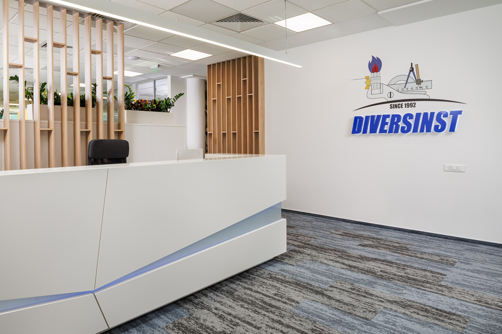
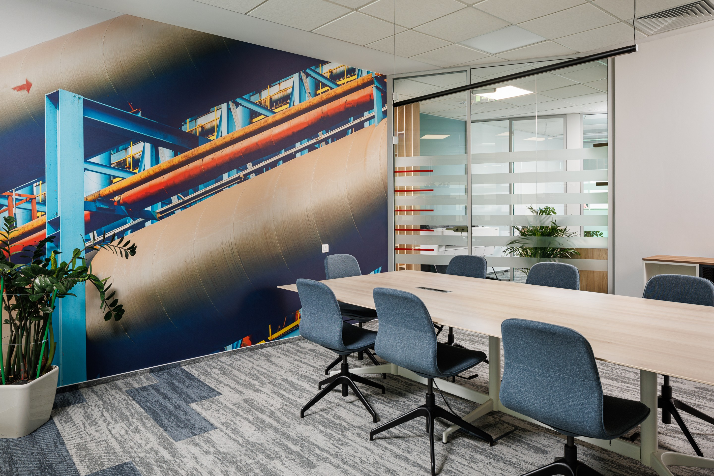

DIVERSINST needed an office that would go beyond basic workplace functionality and become a more representative, comfortable, and engaging environment for its team. Within a relatively compact area, the project had to balance operational work zones with informal areas and create an atmosphere that felt both professional and welcoming.

DIVERSINST
DIVERSINST- How do you turn a 400 sqm office into a workplace that supports focus, comfort, and company identity at the same time?
SCOPE
Client
DIVERSINST, Romanian entrepreneurial company
Timeline
Completion - October 2024
Budget
Not publicly disclosed
Delivered
400 sqm office located in Bucharest Business Park - D Wing
Key constraint
Integrating furniture, flooring, acoustic, lighting, and architectural solutions into a compact footprint without visually overloading the space
Workspace Studio developed a concept centred on functionality, comfort, and atmosphere, combining standard furniture, custom-made pieces, flooring, acoustic and architectural solutions, as well as lighting.
The design logic focused on building a warm and balanced environment: wood textures, natural accents, and informal areas were paired with an efficient work layout. Relaxed seating elements, such as beanbag-style armchairs, helped soften the office language and make the space feel more approachable.
Unlike a standard corporate fit-out, this project was not driven by visual uniformity. Instead, it was shaped around a more tailored workplace experience - efficient in use, but also memorable and human.

THE OUTCOME
- Utilization/adoption metric: Not publicly disclosed
- Timeline/budget performance: Project completed in October 2024
- Client feedback: Not publicly disclosed
- Long-term impact: A coherent and welcoming workplace designed to support both productivity and moments of relaxation for employees
THE DIFFERENTIATION
A conventional approach might have treated the project as a product-selection exercise across separate categories. Workspace Studio instead created a unified environment in which furniture, materials, lighting, and acoustics contribute to the same spatial narrative. The result is not simply a functional office, but a workplace that expresses the client’s culture more clearly.